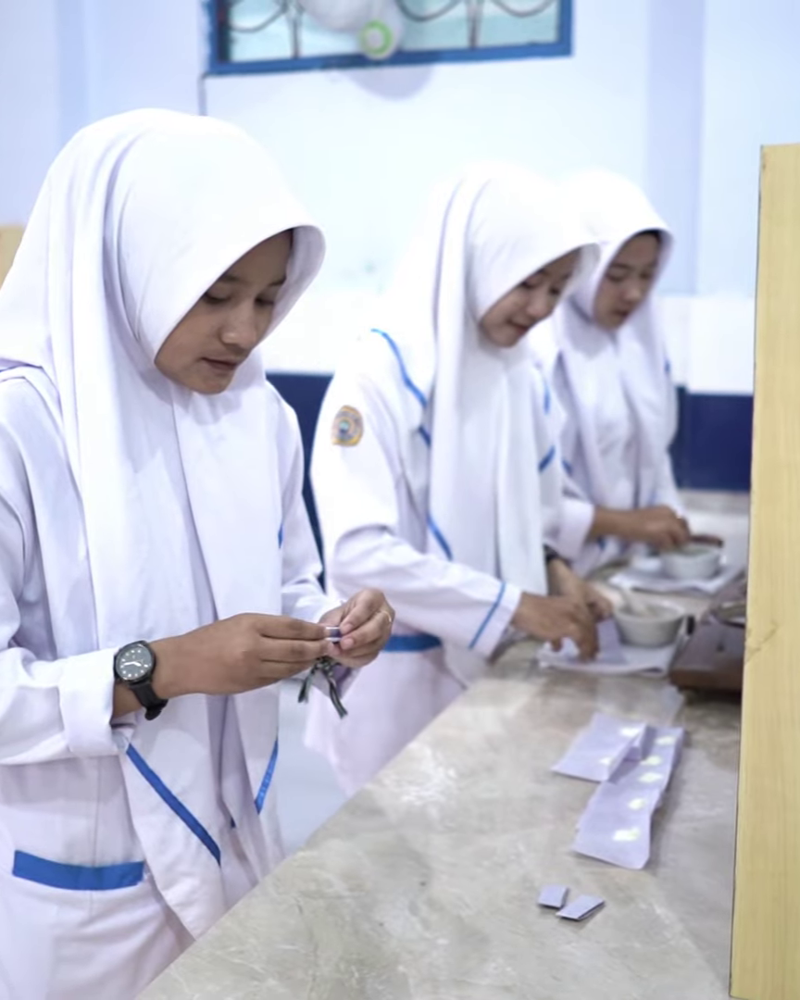
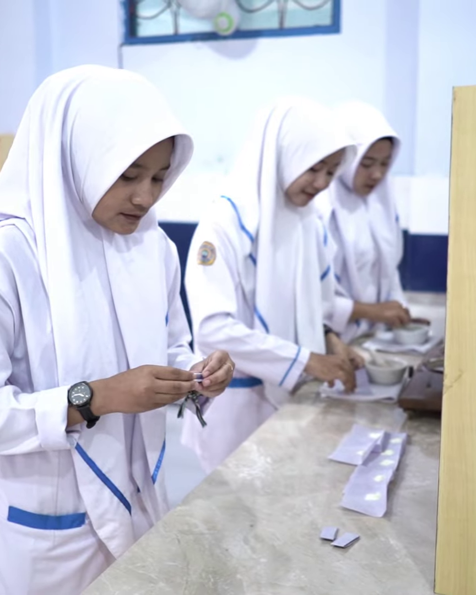

SMK MUHAMMADIYAH 04 BOYOLALI
Jl. Lembayung No. 4 Boyolali
SMK Muhammadiyah 04 Boyolali adalah sekolah yang memiliki komitmen untuk menghasilkan lulusan yang siap kerja, berjiwa wirausaha, cerdas, kompetitif,dan memiliki jati diri bangsa, serta mampu mengembangkan keunggulan lokal dan dapat bersaing di pasar global.


 
